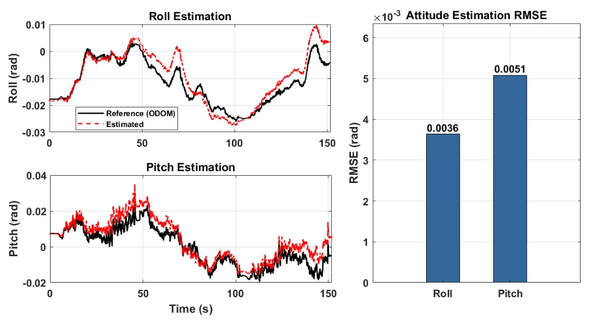
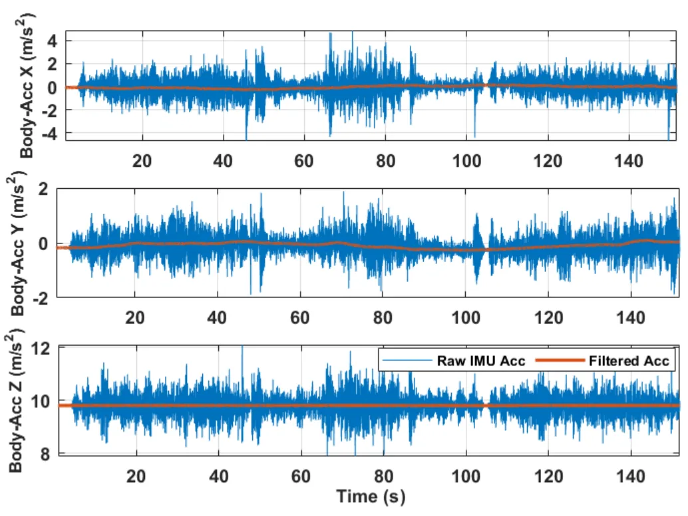
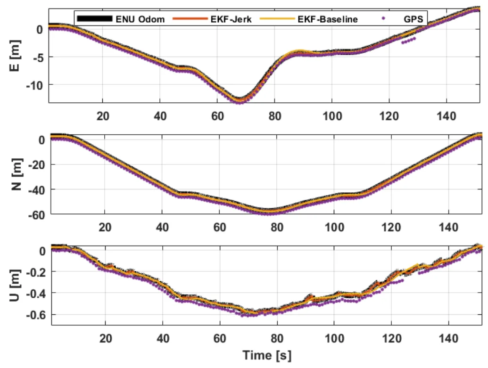
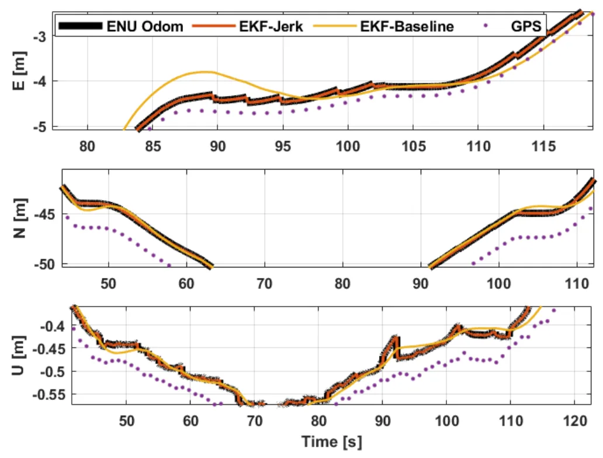
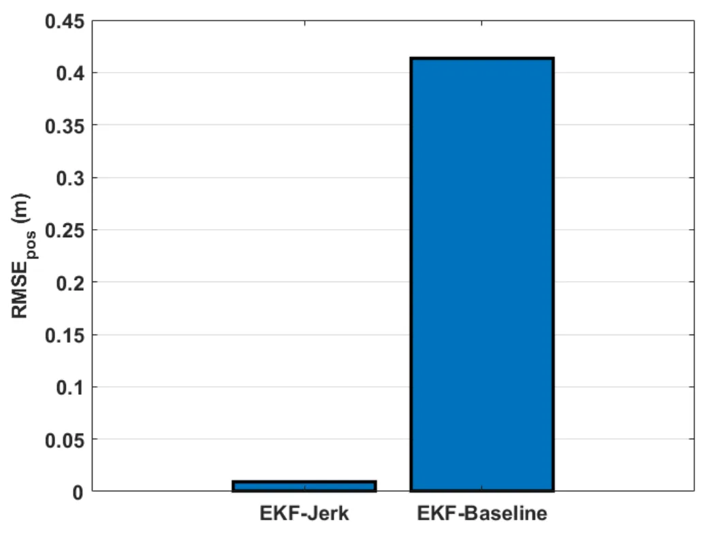

利用 jerk 增广模型和 IMU-only 扰动拒止的自主农机鲁棒导航Resilient Navigation for Autonomous Farm Robots by Leveraging Jerk-Augmented Models with IMU-Only Disturbance Rejection
今天最接近 GNSS/INS/鲁棒导航的论文，面向传感器 outage 和越野振动；但没有直接覆盖 RTK/PPP 或因子图紧耦合。
一句话工作总结
该方法用 jerk 增广 EKF 和多调谐因子自适应协方差，在 GNSS/LiDAR/视觉失效和强振动下增强农机导航鲁棒性。
摘要
自主农业机器人在越野环境中常因 GNSS、LiDAR 或视觉传感器失效以及高频振动而导致精确状态估计受损。本文提出一种基于 jerk-augmented EKF 并结合 Multiple Tuning Factor 自适应方法的鲁棒导航算法。不同于假设测量噪声恒定的标准 EKF，该方法实时动态调整测量协方差矩阵，使系统能够应对突发扰动和传感器离群。作者在 Salin247 自主机器人真实数据上评估，结果表明 jerk augmentation 与 MTF adaptation 相比 baseline EKF 显著降低 3D 位置 RMSE，并提供更强 dead-reckoning 能力。
Precise state estimation for navigation of autonomous agricultural robots is often compromised by sensor outages (GNSS/LiDAR/Visual) and high-frequency vibrations inherent in off-road environments. This paper proposes a robust navigation algorithm based on a jerk-augmented Extended Kalman Filter (EKF) integrated with a Multiple Tuning Factor (MTF) adaptation method. Unlike standard EKF approaches that assume constant measurement noise, our method dynamically adjusts the measurement covariance matrix in real-time, allowing the system to cope with sudden disturbances and sensor outliers. We evaluate the algorithm using real-world data from a Salin247 autonomous robot. Results demonstrate that jerk-augmentation combined with MTF adaptation significantly reduces 3D position Root Mean Square Error (RMSE) compared to baseline EKF models, providing superior dead-reckoning capabilities.
中文解读摘录
- 作者：Ray Zhang, Marcus Greiff, Thomas Lew, John Subosits；类别：cs.CV / cs.AI / cs.RO；发布日期：2026-06-09；备注：16 pages, 12 figures；采集 score=14
- 核心问题：局部点云配准在 LiDAR/RGB-D tracking 中通常依赖 correspondences 或 ICP 类最近邻，特征稀疏、退化或外观变化时容易漂移；RKHS/CVO 类 correspondence-free 方法更稳但一阶优化速度偏慢。
- 方法亮点：把点云表示为带 point-wise anisotropic kernels 的连续函数，核函数编码局部几何，使法向方向更强约束、切向方向更宽松；优化上提出带近似 Riemannian Hessian 的二阶流形优化。
- 结果信号：相对以往一阶 RKHS 配准 solver 最高加速约 10×；在驾驶域 LiDAR tracking 的特征稀疏场景中，平移和旋转漂移均降低超过 55%；RGB-D 与物体配准 benchmark 也显示比 ICP 类方法更稳。
- 关注价值：这是今天最接近 SLAM 前端/里程计的工作。若开源或实现成本可控，值得尝试替换/增强 frame-to-frame LiDAR odometry、RGB-D odometry 和全局初始化后的精配准模块。
图表/页面预览

{kind=link}

{kind=link}

{kind=link}

{kind=link}

{kind=link}
